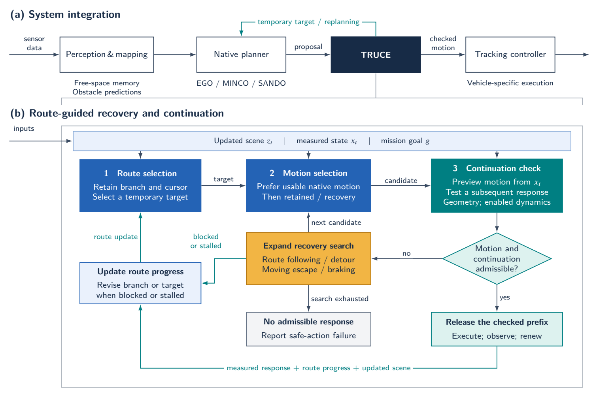
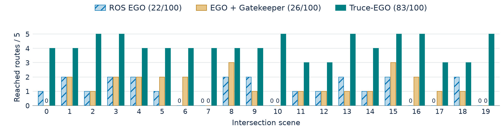
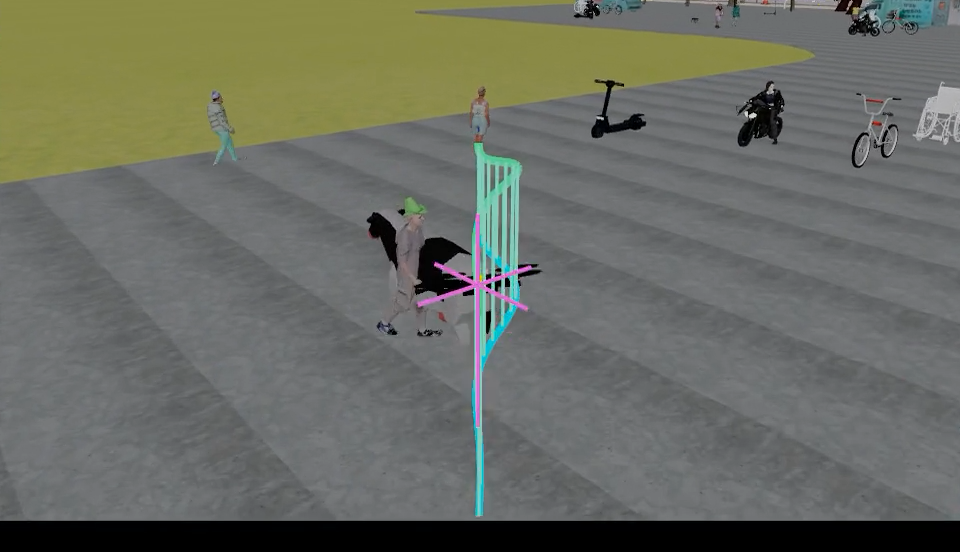
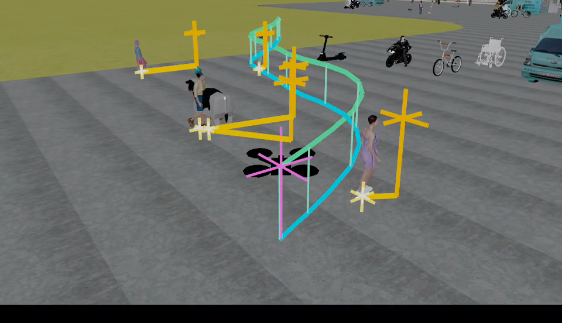

TRUCE: Route-Guided Recovery with Predictive Continuation for Quadrotor Navigation
Anonymous review version
Research Video
Urban flight, static obstacle avoidance and dynamic comparisons across four trajectory planners. English narration · 2 min 57 s.
The film introduces the navigation problem and architecture, then shows a static obstacle collection and paired dynamic demonstrations. Two separate result tables close the film.
Overview
Dynamic urban navigation requires useful detours, recovery from blocked motion and a feasible continuation. TRUCE connects these decisions around an existing trajectory planner. It retains a route, checks proposed motion and searches for recovery when needed. Before executing the next segment, it predicts vehicle motion and checks a follow-up. Measured progress and new observations guide the next decision.
On 100 shared MetaUrban intersection tasks with quadrotor dynamics, TRUCE-EGO v1 reaches 83 goals with no recorded contacts, compared with 22 goals for official ROS EGO v1 and 26 for EGO v1 with Gatekeeper. A complementary 240-run study across EGO v1, EGO v2, MINCO and SANDO increases aggregate goal reaching from 104/120 to 118/120. The additional route, recovery and continuation checks increase computation and travel time.

Route-Guided Recovery and Continuation
Retain a route and measure progress
TRUCE retains a route and selects a visible local target. Progress is measured along the route, so a useful detour can be followed even when the next movement initially increases the distance to the destination. Blocked routes and repeated recovery without progress trigger replanning.
Find a recovery motion
The system keeps usable planner motion before searching route-following segments, lateral detours, moving escape and braking. Recovery starts from the current vehicle state. Predicting the movement matters when momentum or an approaching actor makes waiting unsafe.
Check what can follow
TRUCE checks both the timed reference and predicted vehicle motion. A candidate also needs a feasible continuation from its predicted switching state. Only the next checked segment executes before the process is updated with new observations.
Integrate with different planners
Adapters preserve EGO v1 B-splines, EGO v2 MINCO-based quintics, MINCO quintics and SANDO polynomial trajectories, including their timing and derivatives. Replanning uses measured position, velocity and acceleration. This lets the same coordination process work with different non-learning trajectory planners.
Urban Dynamics: 100 Shared Tasks
The main study evaluates three navigation systems on 20 intersection scenes with five fixed routes per scene: 300 runs, 100 tasks per system. The systems share tasks and a reduced-order quadrotor dynamics model, with each task lasting up to 30 s.
| Method | Reached | Contact | Timeout | SAF |
|---|---|---|---|---|
| Official ROS EGO v1 | 22/100 | 77 | 1 | 0 |
| EGO v1 + Gatekeeper | 26/100 | 1 | 4 | 69 |
| TRUCE-EGO v1 | 83/100 | 0 | 16 | 1 |
SAF: no candidate in the recovery search passed the motion checks.
61 more goals than official ROS EGO v1; 57 more than EGO v1 with Gatekeeper.

Clearance on matched arrivals
TRUCE-EGO v1 retains 21 of 22 ROS EGO v1 arrivals and adds 62. Across the 21 tasks completed by both systems, median taskwise minimum clearance increases from 0.821 m to 1.125 m.
Cross-Planner Study: 240 Runs
EGO v1, EGO v2, MINCO and SANDO are each evaluated with and without TRUCE on 30 shared MetaUrban development tasks. This study uses a translational model and a forward depth camera, with vehicle limits disabled. Its results are reported separately from the quadrotor dynamics study.
| Method | Reached | Contact | Other failures | Plan p50 / p95 / p99 (ms) |
|---|---|---|---|---|
| EGO v1 | 27/30 | 3 | 0 | 38 / 48 / 58 |
| EGO v1 + TRUCE | 30/30 | 0 | 0 | 227 / 425 / 677 |
| EGO v2 | 27/30 | 3 | 0 | 121 / 174 / 218 |
| EGO v2 + TRUCE | 30/30 | 0 | 0 | 176 / 1178 / 1563 |
| MINCO | 21/30 | 1 | 7 NC, 1 CU | 23 / 50 / 68 |
| MINCO + TRUCE | 28/30 | 0 | 2 timeouts | 321 / 512 / 863 |
| SANDO | 29/30 | 1 | 0 | 719 / 840 / 896 |
| SANDO + TRUCE | 30/30 | 0 | 0 | 895 / 1182 / 2219 |
NC: no command; CU: unresolved collision. Timing values are medians across runs of the corresponding within-run planning-cycle statistic.
Across all four planners, goal reaching increases from 104/120 (86.7%) to 118/120 (98.3%), while recorded contacts fall from eight to zero. TRUCE recovers 15 of 16 baseline failures and preserves 103 of 104 baseline arrivals.
Computation and travel
Median planning-cycle time increases for all four planners, by 56 ms for EGO v2 up to 298 ms for MINCO. Travel time also increases, while path length changes less. Reducing recovery and verification costs is a next priority. The simulation pauses during planning, so these timings describe computational cost rather than demonstrated onboard real-time performance.
Navigation in a Dynamic Scene


These replay frames illustrate the navigation behaviour: the base system approaches an actor cluster, while TRUCE detours and continues towards the destination. The video above shows full motion sequences and paired comparisons.
Next Steps
Further work will reduce computation time, isolate the contribution of each module and test the complete perception, planning and control loop on physical platforms.
BibTeX
Citation details will be available after the anonymous review period.